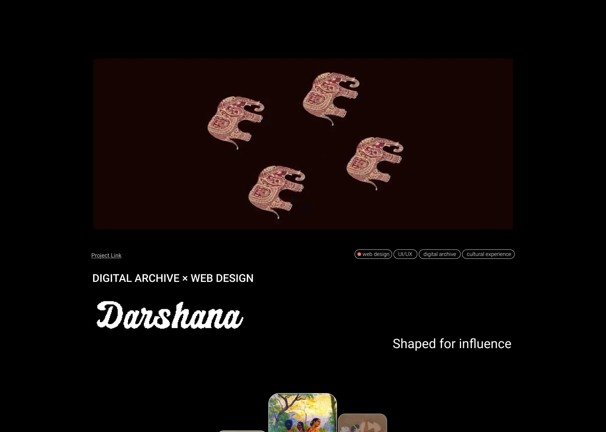
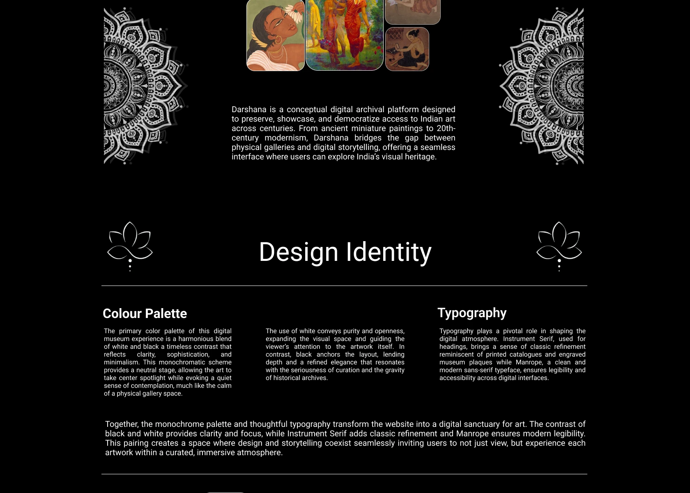
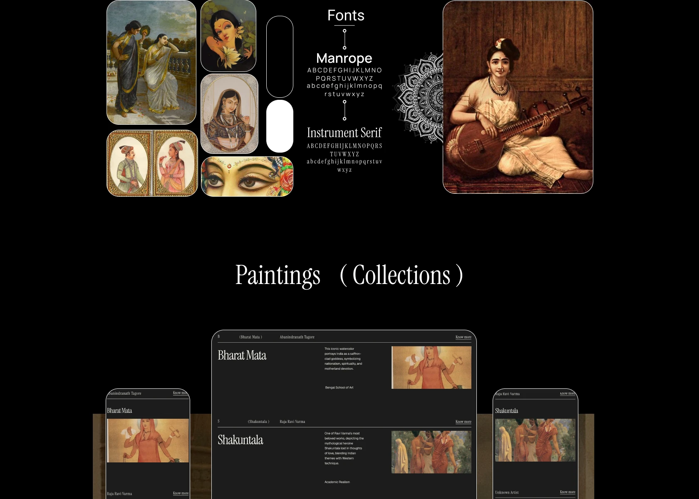
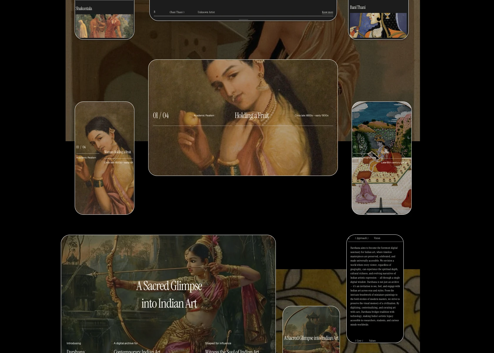
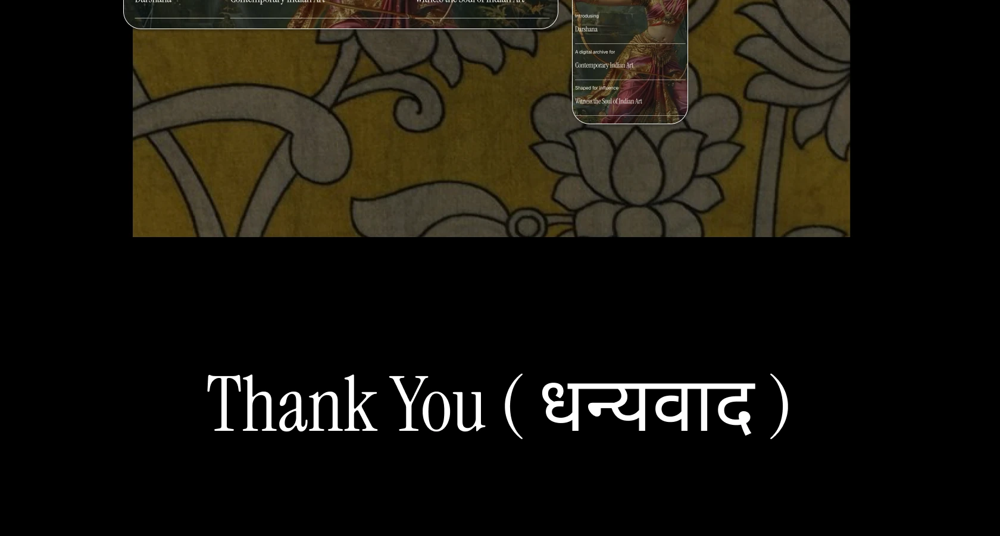

DIGITAL ARCHIVE × WEB DESIGN
Darshana
web design
UI/UX
digital archive
cultural experience
Shaped for influence
Darshana is a conceptual digital archival platform designed to preserve, showcase, and democratize access to Indian art across centuries. From ancient miniature paintings to 20th-century modernism, Darshana bridges the gap between physical galleries and digital storytelling, offering a seamless interface where users can explore India’s visual heritage.
Design Identity
The primary color palette of this digital museum experience is a harmonious blend of white and black a timeless contrast that reflects clarity, sophistication, and minimalism. This monochromatic scheme provides a neutral stage, allowing the art to take center spotlight while evoking a quiet sense of contemplation, much like the calm of a physical gallery space.
Together, the monochrome palette and thoughtful typography transform the website into a digital sanctuary for art. The contrast of black and white provides clarity and focus, while Instrument Serif adds classic refinement and Manrope ensures modern legibility. This pairing creates a space where design and storytelling coexist seamlessly inviting users to not just view, but experience each artwork within a curated, immersive atmosphere.
The use of white conveys purity and openness, expanding the visual space and guiding the viewer’s attention to the artwork itself. In contrast, black anchors the layout, lending depth and a refined elegance that resonates with the seriousness of curation and the gravity of historical archives.
Typography plays a pivotal role in shaping the digital atmosphere. Instrument Serif, used for headings, brings a sense of classic refinement reminiscent of printed catalogues and engraved museum plaques while Manrope, a clean and modern sans-serif typeface, ensures legibility and accessibility across digital interfaces.
Colour Palette
Typography
Fonts
Manrope
Instrument Serif
A B C D E F G H I J K L M N O P Q R S T U V W X Y Z
a b c d e f g h i j k l m n o p q r s t u v w x y z
Paintings ( Collections )
Thank You ( धन्यवाद )